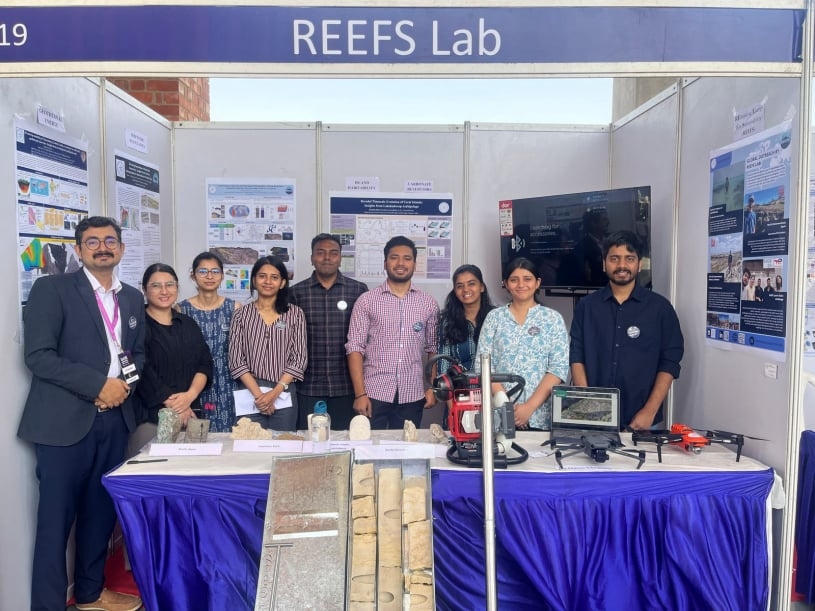
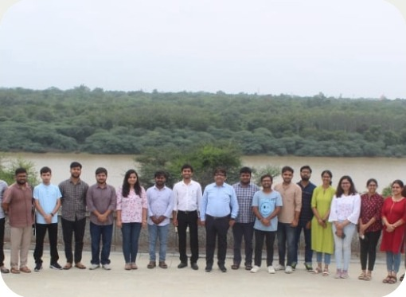
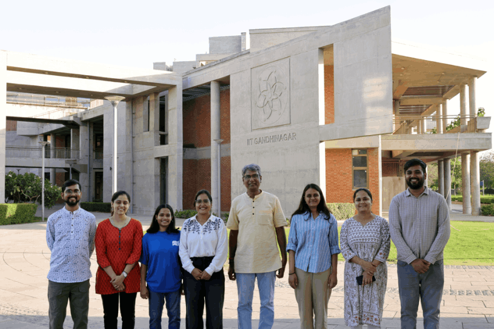
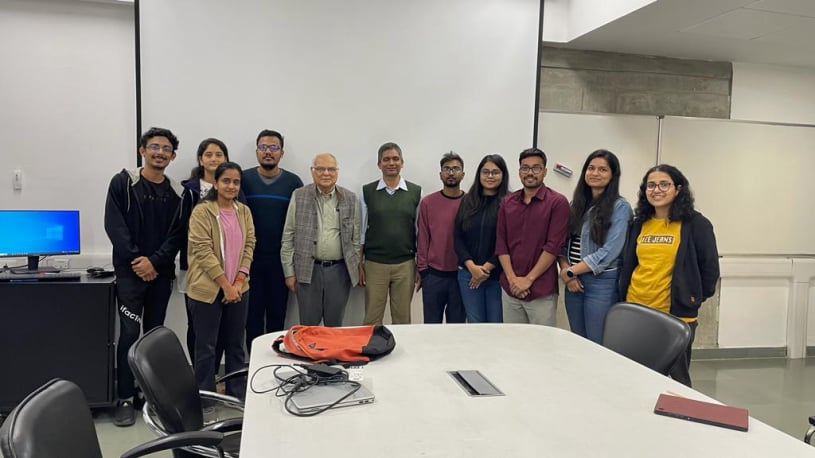
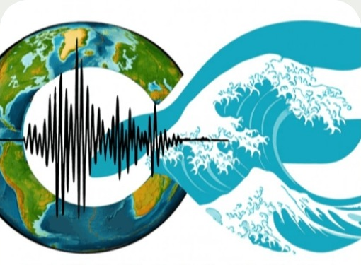
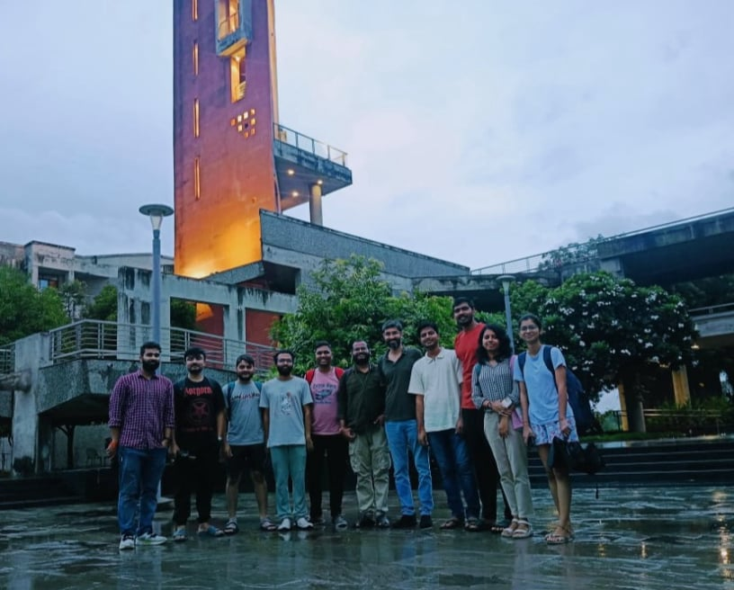
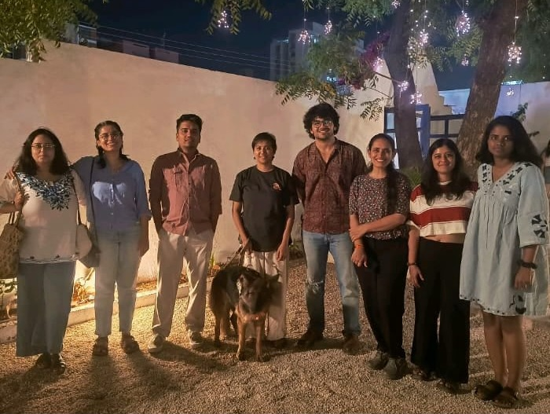
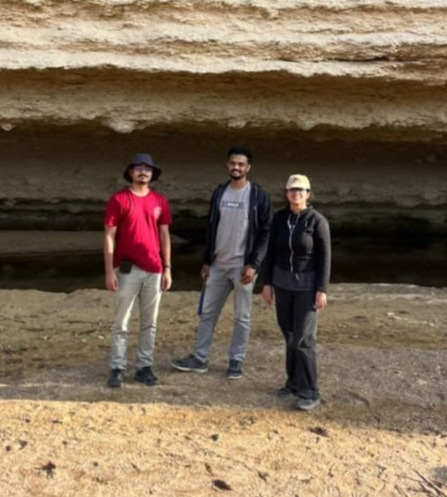

State-of-the-art research laboratories, field surveying gear, geochemical instrumentation, modeling software, and Central Instrumentation Facilities at IIT Gandhinagar.
Led by faculty principal investigators, advancing research in hydrogeology, petrology, river science, geoarchaeology, and tectonics.

Modern and fossil carbonates, coral reef growth dynamics, sea-level changes, micro-CT porosity analysis, and reservoir architecture.
Visit Lab Website →
Surface water hydrology, climate variability, drought forecasting, flood inundation mapping, and groundwater depletion monitoring.
Visit Lab Website →
Ceramic petrology, culinary archaeology, geospatial archaeology, palaeo-environmental reconstruction, and Harappan landscape evolution.
Visit Lab Website →
Earth surface processes, river science, sediment transport yield, channel avulsion hazards, and Himalayan river response.

Evolution of accretionary wedges, numerical deformation modeling, subduction zone geodynamics, and rock fracture mechanics.
Visit Lab Website →
Geological modelling, fluid-rock reaction simulations, geological carbon storage, and reactive transport simulations.
Visit Lab Website →
Application of physical and geochemical sciences in archaeology, ancient biomolecules, zooarchaeology, and interspecies networks.
Visit Lab Website →
Micropaleontology, biostratigraphy, paleobiology, microfossil extraction, and Cenozoic paleoclimate reconstruction.

Experimental rock mechanics, strain localization, rock deformation physics, and fault mechanics testing.
Visit Lab Website →Official instrumentation and field survey equipment available for departmental research and fieldwork projects.
Industry-standard and research-grade software licenses used for basin modeling, GIS analysis, and reservoir simulation.
Earth Sciences faculty and scholars access high-end institute instrumentation at IIT Gandhinagar Central Instrumentation Facility.
Multi-institutional and interdisciplinary research centers hosted or associated with Earth Sciences.
Coordinator: Prof. Vimal Mishra. Real-time hydro-meteorological decision support tools, drought resilience, and groundwater governance across India.
Collaborate with Center →Coordinator: Prof. V.N. Prabhakar. Integrating natural resources, ancient technological materials, wildlife ecosystems, and climate change over millennia.
Visit ASC Website →Coordinator: Prof. C.N. Pandey. Mangrove restoration mapping, water security policies, renewable energy integration, and waste management.
Visit CSD Website →